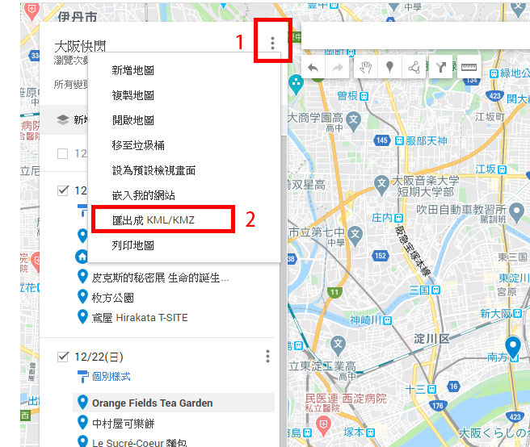
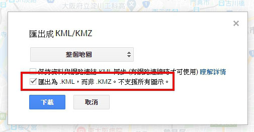
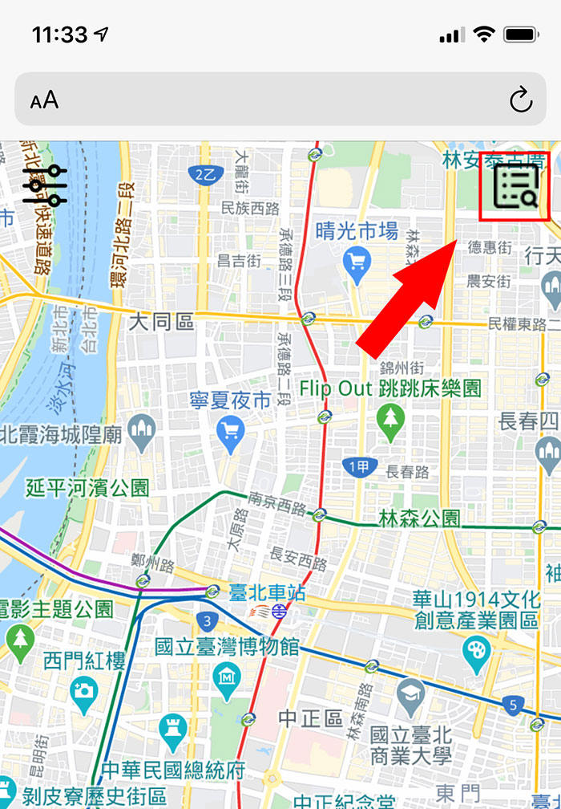
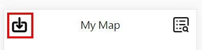

My Map
版本紀錄
使用說明
1.用電腦打開 Google Map，並進入我的地圖，並打開要使用的地圖。(我的地圖詳細操作請自行參閱網路教學)
若無地圖檔，這邊提供一個別人分享的地圖檔案，下載後請直接跳到步驟5
2.點選清單右上角的點點，選擇「匯出成KML/KMZ」。 
3.記得要勾選「匯出為.KML，而非.KMZ。不支援所有圖示」，然後按下載 
4.將剛剛下載好的檔案想辦法傳到手機上(Email、Google Cloud、iCloud...)。
5.點擊左上角回到地圖畫面，點擊右上角的 地圖清單圖示。 
6.接著點擊左上角的 匯入圖示並選擇剛剛傳到手機的.KML檔。

選擇「瀏覽」，預設應該會在下載項目裡面


My Map
({{li.position.toString()}})